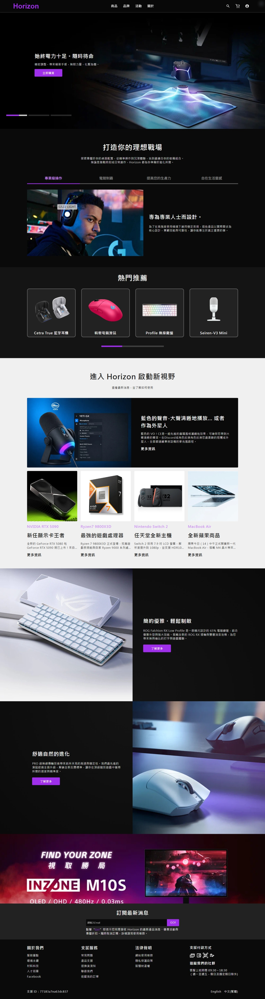
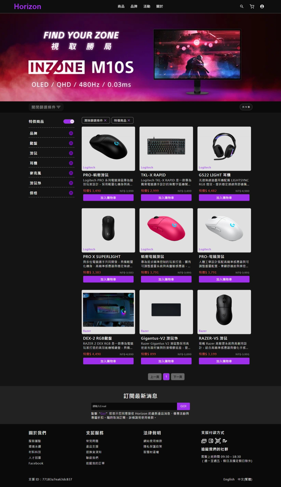
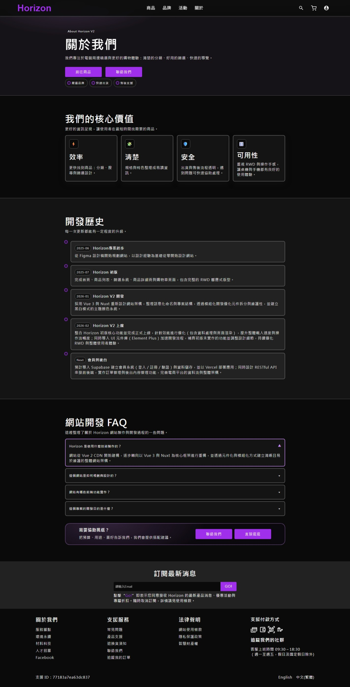
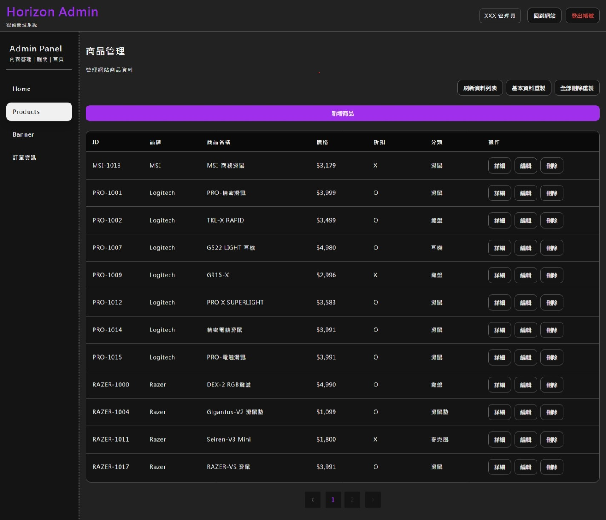
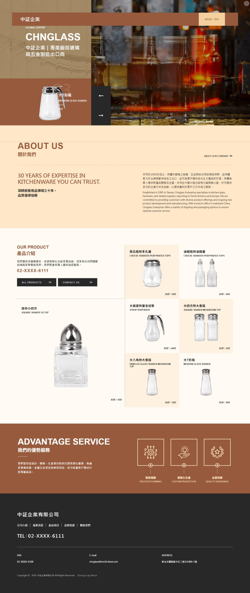

勝風樂器有限公司
薩克斯風技師｜網頁設計
- 台中市太平區
- 5 年 10 個月
-
優化零件分類、工具與物料動線，降低溝通成本；透過品質檢測與問題排查，使出貨不良率降低約 10%。
-
規劃並開發 Samphone 品牌官網，重整資訊架構、使用者動線與圖片動畫，提升需求確認與瀏覽體驗。

您好，我是一名前端開發者，具備設計與實作背景。多年職場經驗讓我養成穩定的工作態度、自學能力與執行力，也能在有限資源下主動拆解問題並完成任務。
我具備 HTML、CSS、JavaScript 基礎，並持續學習 Vue 3、Nuxt 與
TypeScript；
同時具備視覺設計與版面規劃能力，能兼顧美感、資訊層級與操作體驗。開發時習慣先查閱官方文件、理解 API 與設計原則，再透過實作驗證。
目前已完成多項個人專案，具備 API 串接、Pinia 狀態管理及 UI 元件庫應用經驗，能將設計稿高還原度地轉化為具響應式的前端介面，並具備客製化版型、動畫效果與複雜版面切版能力。
我希望加入能持續累積實務經驗的團隊，運用設計敏感度、學習效率與穩定執行力，協助團隊完成開發工作。
Experience
以 SCSS、RWD 與網站介面實作為核心
優化零件分類、工具與物料動線，降低溝通成本；透過品質檢測與問題排查，使出貨不良率降低約 10%。
規劃並開發 Samphone 品牌官網，重整資訊架構、使用者動線與圖片動畫，提升需求確認與瀏覽體驗。
參與互動遊戲《逢甲跑跑》，負責企劃提案、團隊組建、進度控管及 ActionScript 3 程式實作，作品於公司餐會公開展示。
Profile
切版為主，前端開發與視覺設計為輔
以 SCSS 與響應式網站切版最為熟練，能依照設計稿建立清楚的版面結構， 並處理元件樣式、複雜版型、互動動畫及不同裝置的顯示細節。
具備 JavaScript、Vue、Nuxt 等前端開發基礎， 也能運用視覺設計能力協助資訊層級、版面規劃與 UI 實作。
畢業於嶺東科技大學，曾參與前端相關職業訓練， 並持續透過線上課程、官方文件與個人專案自學前端技術。
以台中地區職缺為主，也能接受遠端工作模式。




2026 / 01 ～ 2026 / 04
此專案為個人從 0 開始規劃與設計之電商平台，並將既有 Vue 2 架構重構為 Nuxt 3，導入 TypeScript 與 Supabase， 建立具備型別安全與可維護性的應用架構。
專案涵蓋商品展示、搜尋篩選、購物流程與後台 CRUD 管理， 透過 RESTful API 串接前後端，實作使用者驗證與權限控管， 並整合狀態管理與表單驗證，提升系統穩定性與使用者體驗。

2026 / 05 ～ 2026 / 05
此作品為個人切版與互動特效練習專案，參考高質感品牌官網風格進行設計與前端實作，著重於版面細節、動畫流暢度與視覺呈現。
專案主要使用 HTML、SCSS、JavaScript 開發，並結合 Swiper、Splitting.js 製作輪播、文字分割動畫與互動效果，同時透過模組化架構與動態模板提升程式碼的維護性。
Selected projects
滑動瀏覽作品